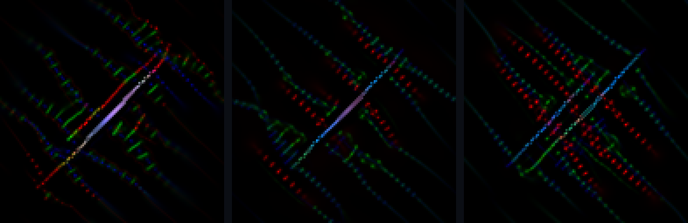
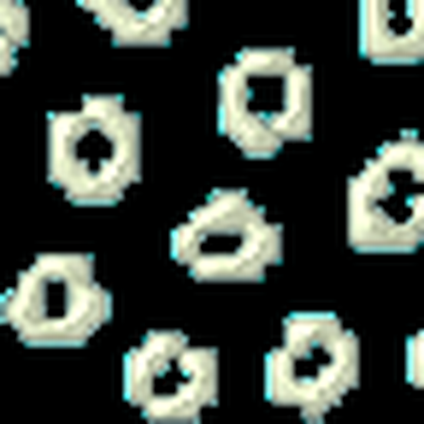
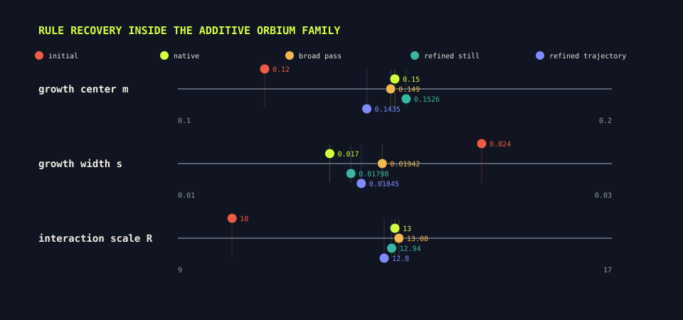

Question
How tightly does a measured body constrain the rule that generated it?
We tested three inverse problems: matching a few measurements, finding a rule that maintains a supplied body, and recovering hidden parameters inside a known Lenia family. Each approach evaluates candidate rules by simulation. None of them yet discovers both a compact seed and the rule that grows an arbitrary requested anatomy.
Each Flow Lenia rule in this analysis has 40 parameters. We ran 5,000 distinct rules and described each stable result with 15 measurements covering body form, mass, energy, and movement. We then asked how much those measurements narrow down the rule that produced them.
Across the corpus, variation in the 40 rule parameters behaved as if it had about 25.5 independent directions. Variation in the 15 outcome measurements behaved as if it had about 5.9 independent directions. We use the 19.6-direction gap as a coarse estimate of how many rule variations the measurements fail to distinguish. A second calculation estimated a similar gap of 20.9 directions.
We checked the same idea without subtracting dimension estimates. Rules that produced nearby measured bodies were, on average, 98.6% as far apart as randomly paired rules. Similar bodies therefore do little to identify the underlying rule. This ambiguity motivates all three approaches: propose several rules, run them, and compare their outcomes with the requested target.
How tightly does a measured body constrain the rule that generated it?
Rules producing nearby measured bodies had an average separation equal to 98.6% of the distance between randomly paired rules.
All three approaches test candidate rules in the simulator. They differ in what the target specifies and which parts of the rule are allowed to change.
Phenotype space contains the measurements made on each body. We call the set of rules that produce similar measurements a fiber. A large fiber means that the body measurements constrain the generating rule only loosely.

Each point below represents a set of body measurements. The rules compatible with those measurements form the vertical set above it. The geometry is illustrative rather than measured.
reused schematic
Because several rules can fit the same target, the system needs a policy for choosing among them. Different policies may select rules with different unmeasured dynamics.
reused schematic
A smooth change in rule parameters can still pass through a region where no viable body develops. Search therefore has to preserve viability as well as reduce distance to the target.
reused schematicFigures 01A–01C are conceptual diagrams. Figures 02–04 are generated from the frozen anatomical-compiler results.

The corpus occupies about 25.5 intrinsic rule dimensions and 5.9 intrinsic phenotype dimensions. Their 19.6-dimension difference is estimated from the geometry of the samples; it is not the raw count of 40 parameters minus 15 measurements.
5,000 forms
The ratio is 0.986, where 1.0 means that nearby measured bodies are no closer in rule space than shuffled pairs. The difference from 1.0 is detectable, but it is small.
cohort diagnostic
This local test perturbed 12 rules and followed seven descriptors. About five response directions crossed the threshold, but most sensitivity was concentrated in roughly 2.3 effective directions.
12 local probesThe 19.6 and 37.7 dimension estimates answer different questions. The first compares the global intrinsic dimensions of the 5,000-rule corpus and its 15 measured outcomes. The second subtracts the effective rank of a seven-descriptor local response from the full 40-parameter rule. They both indicate substantial ambiguity, but their numerical values are not directly comparable.
All three searches use forward simulation. The target may be a handful of measurements, a complete spatial field, or an observed field from a known rule family. Each target defines a different success criterion.
Search for a rule whose trajectory has the requested mass, occupied area, variation, and spatial spread.
Use the requested spatial field as the initial condition and search for a rule that keeps it coherent and active.
Keep the rule family and starting cells fixed, then fit the unknown parameters to an observed field.
R, m, and sChoose measurements, a spatial field, or a known-family observation. That choice determines what a successful result means.
approach-specificRetrieve nearby rules, sample a conditional model, or draw values from a declared parameter range.
proposal stageRun every candidate forward and compare its measurements or field with the target.
forward rolloutsConcentrate the next search around the better candidates, then replay the selected rule beyond the scored interval.
validationThe results below test parts of this system. The conditional proposal check used eight samples across two targets. The refinement result used four targets. The MLX and Swift comparison covered one rule, one starting field, and six steps.

Lower is better on this standardized descriptor distance. Refinement improved all four targets, reducing the mean from 1.149 to 0.576, although one target still ended at 0.947.
four targets
For one genotype and initialization seed, MLX and Swift remained closely aligned through step six. This check covers the beginning of one trajectory.
implementation checkSpecimen 2876 was selected from the 5,000-form corpus because its developed body is compact, tapered, and easy to recognize. The search receives four measurements from its 1,200-step trajectory. It does not receive the target images.
The result matches the four numbers better than it matches the anatomy. The fitted organism has similar bulk measurements, but its segmented structure is visibly different. Those four measurements leave enough freedom for another body plan.

The body changes as it develops, so a single frame misses part of the phenotype. The target measurements cover the full trajectory.

Mass, mass variation, occupied area, and gyration, a measure of spatial spread, define the request. Orientation, segmentation, topology, and locomotion are absent from the target.
| measurement | target | fitted |
|---|---|---|
| mass | 799.9 | 791.1 |
| occupancy | 11.7% | 10.5% |
| gyration | 1005.0 | 1152.8 |

The target specimen itself was excluded from retrieval. The search finds twelve other corpus entries with nearby measurements, simulates them, and starts from the lowest-cost proposal. This is one leave-one-out example, not a cohort evaluation.

Six generations of 32 candidates reduced the MLX descriptor cost from 6.99 to 5.26, a 25% decrease. A separate Swift replay measured a standardized cost of 0.975. The two values come from different forward implementations and are reported separately.

The largest improvement occurred in the first generation. Later generations changed the rule only slightly under the MLX objective.
6 × 32 rollouts


The fitted genotype contains one shared radius and three kernel blocks. Each block specifies a radial profile and a growth response. The second kernel has zero growth height in the selected rule, so two kernels drive the final dynamics.
40 parametersThe target and recovered trajectories have similar mass and occupied area, but their late bodies remain visibly different. Segmentation and pixelwise structure are absent from the objective, so they have no effect on the score.
The source trajectory retains one dominant tapered body with peripheral material.
target
The fitted rule distributes similar mass across a repeated segmented arrangement.
fittedHere the target is a body taken from the dataset, and that complete field is also the initial condition. Candidate rules are judged by whether it remains coherent, active, and topologically similar during the recorded rollout. The starting field is supplied rather than discovered.

The center panel tests the actual objective: whether the fitted rule maintains the supplied field. The right panel asks a separate question. Starting the same rule from generic noise produces a coherent body, but not the requested anatomy.
one form demoThe procedure maintains an anatomy that is already present. A stronger anatomical compiler would also search for a compact starting pattern and a rule that develops it into the requested body.
To make the inverse problem tractable, we fixed Orbium's update law, kernel, growth function, and starting cells. We then withheld three numerical parameters: the interaction radius R, the growth center m, and growth width s. We searched for values whose simulation matched the reference body after 600 steps.
The search uses the native qd24_additive_v1 update and Orbium's one-kernel geometry. Other update laws and kernel layouts are not considered.
The search starts from R=10, m=0.12, and s=0.024. These values disperse the initial cells into a ring and small fragments.
The first stage evaluates 2,688 parameter combinations. Every candidate runs for 600 steps.
28 × 96 rolloutsThe second stage evaluates 1,152 candidates near the broad-search winner. The selected rule is then run to step 1,200.
12 × 96 rollouts
The initial parameters fail. The fitted parameters produce a close reconstruction. Each candidate is simulated for 600 steps, then its complete field is compared with the reference field.

The narrow second stage improved the field match from 0.878 to 0.969 and brought all three hidden values close to the native rule.
broad search → local refinementThe fitted parameters also produced a coherent body at the unscored steps. The result is limited to parameter recovery because the update family, kernel geometry, growth function, starting cells, and elapsed time were supplied.
A control search used steps 100, 300, and 600. It returned R=12.80, m=0.1435, and s=0.0185. Its replay also remained coherent through step 1,200.
Both runs used the same broad and refinement budgets. The three-frame run ended farther from the hidden values than the run scored only at step 600. This is one organism, so it does not establish that single-frame targets are generally better.
We measured six behaviors in 8,174 creatures and reduced them to principal axes. The first axis is dominated by speed, path length, displacement, and center velocity, so we call it locomotion. The second is dominated by energy and temporal variance, so we call it activity. Together they account for 87.2% of the behavioral variation.

Most creatures occupy a dense low-speed region, while fast locomotion forms a sparse tail. Any model trained on this distribution will see many more slow examples than fast ones.
8,174 creaturesOccupancy and spread helped predict activity. The same shape measurements explained only 3.8% of the locomotion axis. Matching form measurements does not determine how the result will move.

Activity predictions cluster near the diagonal. Locomotion predictions remain compressed near the bottom of the plot.
descriptive regressionWe fitted a potential surface to the regions where trajectories ended, then compared its downhill direction with their observed motion. The alignment was weak. In a separate perturbation test, five of eight genotypes became more dispersed over time. These results give no evidence that a selected rule will correct perturbations or converge from nearby starts.

Across 3,600 trajectory points, observed drift aligned with the fitted downhill direction by 0.124. An alignment of 1 would follow the fitted landscape exactly; zero would show no preferred alignment.
descriptive
Three rules narrowed the differences between their six initial conditions, while five widened them. The mean late-to-early spread ratio was 1.39, where values above 1 indicate divergence.
8 × 6 rolloutsBulk shape was much more repeatable than motion across starting conditions. Across the same six initial conditions, mean variation was 2.5% for shape and 51% for motion. A rule can produce a broadly consistent form while leaving its trajectory highly contingent on the start.

Across 80 creatures, complexity and drift had a correlation of r = 0.045. In this sample, visual complexity provided almost no information about whether a body would remain near its initial location.
80 creatures
The warm-start archive occupied 195 of 576 cells (33.9%). The empty regions show body measurements for which this corpus offers no direct proposal.
proposal coverageThe descriptor search, form-maintenance search, and within-family parameter recovery each have different success criteria. None has been evaluated as a general system that turns an arbitrary requested anatomy into both a developmental seed and a rule.
The ledger records the source for every number, specimen, replay, and reused schematic. SHA-256 identifies the exact bytes. The June files do not contain the revision that produced those historical results; the September case-study entries include their exact configs and media.
| Kind | Source | Bytes | SHA-256 prefix |
|---|---|---|---|
| frozen artifact | stage1_fresh_fiber.json | 1,424 | 1fcae1ea8b1613f7… |
| frozen artifact | stage1_jacobian_fiber.json | 4,632 | 9e5e975176e31401… |
| frozen artifact | stage2_cinn.json | 1,244 | d5ecd3b9f31ca5b6… |
| frozen artifact | stage3_refine.json | 551 | be159631b5f0097f… |
| frozen artifact | compiled/demo1/result.json | 1,930 | cf085fb32904ed5f… |
| frozen artifact | compiled/demo1/target.png | 18,649 | de6ebc2862bb8589… |
| frozen artifact | compiled/demo1/creature.png | 16,356 | 53dcf3f8d11f758a… |
| frozen artifact | compiled/demo1_cinn/result.json | 1,889 | a9f5988e1fa3c754… |
| frozen artifact | compiled/demo1_cinn/creature.png | 15,957 | 58e787e1bf2451f2… |
| frozen artifact | compiled/form_demo/result.json | 6,826 | 044567fdf4ea014c… |
| frozen artifact | compiled/form_demo/form_compile.png | 66,658 | b3b03d35b8af0ba2… |
| frozen artifact | mlx_validation.json | 1,039 | 79316f3cb993eef9… |
| frozen artifact | qd_archive/archive.json | 350,936 | 614a1919941427fd… |
| frozen artifact | qd_archive/coverage.png | 2,321 | a6ed57c87e362506… |
| frozen artifact | waddington_flow.json | 2,141 | 6537452489f02b52… |
| frozen artifact | canalization.json | 2,357 | c5a5924d1ae5c946… |
| frozen artifact | functional-morphospace/functional_morphospace.json | 1,685 | e8f6e4b61b319865… |
| frozen artifact | functional-morphospace/shape_function_coupling.json | 1,398 | b9923f08f942351a… |
| frozen artifact | functional-morphospace/functional_morphospace.png | 65,958 | 52f66e8726ea151a… |
| frozen artifact | functional-morphospace/shape_predicts_function.png | 13,462 | 101f3f6ed749b081… |
| frozen artifact | 3c15/functional_map_mlx/functional_map.json | 9,209 | e69a9cec67faaa34… |
| frozen artifact | 3c15/functional_map_mlx/bodies_montage.png | 139,541 | 55b2a1b2466e1bab… |
| reused explanatory schematic | site/assets/blog/lenia-morphospace-report/fig-fiber-bundle.svg | 4,621 | 43000b7e7db2b7c0… |
| reused explanatory schematic | site/assets/blog/lenia-morphospace-report/fig-sections.svg | 4,182 | 569fec81d4c9dd71… |
| reused explanatory schematic | site/assets/blog/lenia-morphospace-report/fig-bridge-genotype-phenotype.svg | 3,035 | 363d5905c657c2e8… |
| 2026-09-01 case-study rerun | compiled/descriptor-organic-2876-final/result.json | 15,065 | b5076bb598eb5baa… |
| 2026-09-01 case-study rerun | compiled/organic-2876-trial/result.json | 7,625 | c1193ac52130e294… |
| 2026-09-01 case-study rerun | media/organic-2876/target-base.json | 1,890 | 96712d27919bb1b9… |
| 2026-09-01 case-study rerun | media/organic-2876/recovered-base.json | 2,145 | 7e61c204d374891b… |
| 2026-09-01 case-study rerun | media/organic-2876/search.json | 1,051 | 8b5d8113be1a7d28… |
| 2026-09-01 case-study rerun | media/organic-2876/target-body.mp4 | 561,891 | e70259f567a5b091… |
| 2026-09-01 case-study rerun | media/organic-2876/recovered-body.mp4 | 957,390 | 9b42766440cf423b… |
| 2026-09-01 case-study rerun | media/organic-2876/target-run/anatomical-target-2876/frames_color/frame_000600.png | 108,733 | 7396b4565167a62f… |
| 2026-09-01 case-study rerun | media/organic-2876/target-run/anatomical-target-2876/frames_color/frame_001190.png | 122,830 | 676f2be888b9ae58… |
| 2026-09-01 case-study rerun | media/organic-2876/recovered-run/anatomical-recovered-2876/frames_color/frame_000600.png | 174,617 | b136b78fcb83bd47… |
| 2026-09-01 case-study rerun | media/organic-2876/recovered-run/anatomical-recovered-2876/frames_color/frame_001190.png | 121,202 | da36d4748bdf8ecb… |
| 2026-09-01 case-study rerun | compiled/descriptor-organic-2876-final/trace-00.png | 17,882 | fa03595c4170e155… |
| 2026-09-01 case-study rerun | compiled/descriptor-organic-2876-final/trace-01.png | 15,293 | 1c4156380fc3ec66… |
| 2026-09-01 case-study rerun | compiled/descriptor-organic-2876-final/trace-02.png | 14,439 | 8a31ce5df13ad3bb… |
| 2026-09-01 case-study rerun | compiled/descriptor-organic-2876-final/trace-06.png | 14,818 | 67ef9c151f42f916… |
| 2026-09-01 case-study rerun | compiled/organic-2876-trial/target.png | 13,121 | 47aac3a2842dedcf… |
| 2026-09-01 case-study rerun | compiled/organic-2876-trial/creature_swift.png | 11,834 | 2eb60b71e7951b21… |
| 2026-09-02 within-family Orbium inverse | orbium-system-id-v5/experiment.json | 1,284 | e7d17cd2fca63593… |
| 2026-09-02 within-family Orbium inverse | orbium-system-id-v5/still-es.json | 197,817 | c8262451e333bf09… |
| 2026-09-02 within-family Orbium inverse | orbium-system-id-v5/still-run/best.json | 141 | 2e99f52c9591bc8c… |
| 2026-09-02 within-family Orbium inverse | orbium-system-id-v5/still-run/history.jsonl | 12,161 | 540933e403833518… |
| 2026-09-02 within-family Orbium inverse | orbium-system-id-v5/trajectory-es.json | 591,583 | dbb42ebb131bbec6… |
| 2026-09-02 within-family Orbium inverse | orbium-system-id-v5/trajectory-run/best.json | 143 | 97902a5fa38d9c4f… |
| 2026-09-02 within-family Orbium inverse | orbium-system-id-v5/trajectory-run/history.jsonl | 12,205 | b3d53ac97bb5e77a… |
| 2026-09-02 within-family Orbium inverse | orbium-system-id-v5/report-assets/orbium-initial-600.png | 255,120 | 040ffb2271b6a55b… |
| 2026-09-02 within-family Orbium inverse | orbium-system-id-v5/report-assets/orbium-inverse-summary.json | 1,271 | 904916197598ed88… |
| 2026-09-02 within-family Orbium inverse | orbium-system-id-v5/report-assets/orbium-rule-recovery.svg | 6,418 | a0125a9a26e7e89b… |
| 2026-09-02 within-family Orbium inverse | orbium-system-id-v5/report-assets/orbium-still-100.png | 187,493 | 88843f7bf4824041… |
| 2026-09-02 within-family Orbium inverse | orbium-system-id-v5/report-assets/orbium-still-300.png | 186,697 | b7b91bc0d08bd62f… |
| 2026-09-02 within-family Orbium inverse | orbium-system-id-v5/report-assets/orbium-still-600.png | 185,894 | e7eab62cced81915… |
| 2026-09-02 within-family Orbium inverse | orbium-system-id-v5/report-assets/orbium-still-1200.png | 189,664 | 4c4cdf26049b32a0… |
| 2026-09-02 within-family Orbium inverse | orbium-system-id-v5/report-assets/orbium-still-zoom.mp4 | 812,518 | 37933bf5d5c5bb09… |
| 2026-09-02 within-family Orbium inverse | orbium-system-id-v5/report-assets/orbium-target-100.png | 186,009 | 2befab83732f67c4… |
| 2026-09-02 within-family Orbium inverse | orbium-system-id-v5/report-assets/orbium-target-300.png | 187,779 | 2aacf01203662f32… |
| 2026-09-02 within-family Orbium inverse | orbium-system-id-v5/report-assets/orbium-target-600.png | 186,927 | e0ca77a833258f14… |
| 2026-09-02 within-family Orbium inverse | orbium-system-id-v5/report-assets/orbium-target-1200.png | 186,735 | 2d39c4a8ffcb94ed… |
| 2026-09-02 within-family Orbium inverse | orbium-system-id-v5/report-assets/orbium-target-zoom.mp4 | 834,738 | 12c499769fe12ce6… |
| 2026-09-02 narrow Orbium refinement | orbium-system-id-v6-refine/refine-es.json | 197,819 | 7bcda98c84215935… |
| 2026-09-02 narrow Orbium refinement | orbium-system-id-v6-refine/refine-run/best.json | 143 | 43c2f254196e5526… |
| 2026-09-02 narrow Orbium refinement | orbium-system-id-v6-refine/refine-run/history.jsonl | 5,165 | e28679376dddcbf6… |
| 2026-09-02 narrow Orbium refinement | orbium-system-id-v6-refine/trajectory-refine-es.json | 591,585 | 840f48b9aab5b4be… |
| 2026-09-02 narrow Orbium refinement | orbium-system-id-v6-refine/trajectory-refine-run/best.json | 140 | 93cfbf398087a085… |
| 2026-09-02 narrow Orbium refinement | orbium-system-id-v6-refine/trajectory-refine-run/history.jsonl | 5,192 | 7b2bca59b1f57f3b… |
The June and September evidence have different provenance. The frozen June artifact JSON files do not record their source revision, so artifactProducingRevision remains empty. The September organic rerun and within-family Orbium inverse are listed separately with exact configs, results, frames, and videos. The complete machine-readable ledger is source-manifest.json.